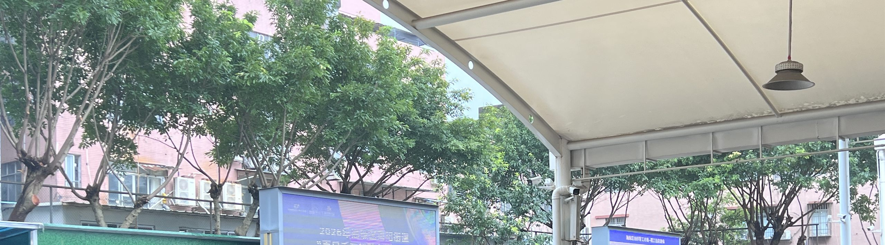

Field Archive · 4 Records
这四份档案都来自 2026 年 8 月的田野走访。访谈地点多在招工广场与厂区附近，谈话对象由同乡网络介绍。
当前显示 0 份档案 · 点击卡片阅读完整档案
Cross Reading
样本很小，不足以代表十三万人。但小样本也有小样本的读法——把它当作四条位置不同的坐标，而不是一份统计。
四人都来自湖北，却分别站在产业链的不同位置：日结散工、从长工转下来的散工、进厂的长期工、 接下父辈厂房的「厂二代」。同一场行情波动，落到每个人身上的形状并不一样。
一头是四十五岁、做了二十多年散工的师傅；另一头是二十九岁、守着二十几台缝纫机的厂二代。 「从制衣工到厂主」这条通道曾经清晰可见，如今两端的人都在说同一句话：不知道还能走多久。
「二十余年」「四年」「两百多平」「二十几台」是坐标；「厂家没生意，我们就没活干」 「哪怕熬秃了头，也未必能复刻当年的红火」是体温。数字定位置，语气定处境。
档案不记录姓名、住址、厂名等可识别信息。处理原则见声明与方法。